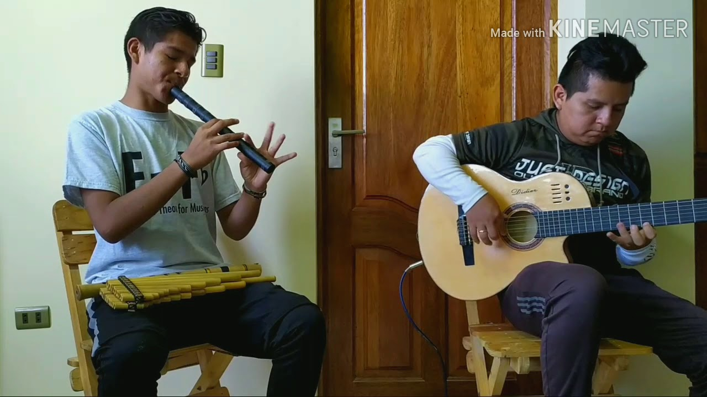

- Didier
Para el director, fundador, charanguista y voz de Kala Marka, Hugo Gutiérrez, fue siempre uno de los más grandes anhelos actuar en el mítico escenario del Gran Rex, un desafío que llevó a la agrupación boliviana al más alto nivel de éxito. “Llegamos un par de días antes y paseando por Corrientes, tuve algo de nervios. Ahí estaba nuestro afiche ¡La puerta forrada con los banner de Kala Marka! Todo anunciaba el concierto… estábamos ahí, frente a uno de los sueños de toda mi vida”, explicó el director. Empezaba la tarde del domingo 19 de junio y miles de personas llegaban en grupos con banderas bolivianas y wiphalas hasta la avenida Corrientes, cerca del majestuoso Obelisco de la ciudad de Buenos Aires, a celebrar el Willkakuti 5530, convocado por Kala Marka en el Gran Rex, uno de los teatros más importantes de América del Sur, por cuyo escenario han desfilado figuras emblemáticas del arte mundial. La prueba de sonido del grupo musical y de pista para el ballet se inició en un teatro vacío completamente, que en pocas horas llegó a su máxima capacidad. En la avenida y en el hall del recinto retumbaban los bombos y sikuris que daban la bienvenida a Kala Marka y a su homenaje al Willkakuti 5530.
Foto de Didier
La apuesta del ballet Kala Marka, de la mano de su directora Paola Miranda, era llevarnos a un paseo por las danzas bolivianas interpretadas con maestría por 12 bailarines. En la primera presentación en un escenario de este nivel fuera de Bolivia, cada una de las estructuras coreográficas calzaba perfectamente en el escenario del Gran Rex y dibujaba a la Bolivia que ante el hecho creativo, ha generado un inmenso acervo cultural representativo de la América profunda, esa que estamos obligados a descubrir a través de sus expresiones artísticas. El despliegue de música, baile, coreografías y vestimentas de danzas como las del pujllay o el tinku, asombraron a los porteños que acudieron a la cita y esperan repetir el plato. Sentimientos a flor de piel surgieron en todas y cada una de las piezas que dan cuerpo a Kala Marka, artistas que zarandearon la sobriedad del inmenso teatro y transformaron la sutileza de sus líneas en una fiesta de luces impregnadas de plurinacionalidad. La despedida fue con el estreno de Saya para vivir, una fusión inspirada en la música y bailes afrobolivianos, con cuya letra rinden homenaje a todo Yungas: “Tienes la magia de tu tierra buena/sueño en ti despertar/besar tus manos y tu piel morena/warmisita, yungueñita, eres mi inspiración”. Estremeció el apoteósico y emocionado grito “Gracias, Argentina”. En su regazo el Gran Rex envolvió durante una noche la fantasía de un sueño cumplido, que ya resuena histórica. ¡Jallalla!
.jpg)